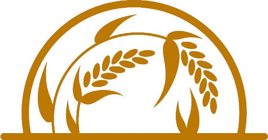
햅쌀로 밥을 지으면 얼마나 맛있게요?
봄부터 흘린 농부들의 땀방울이 결실을 맺는 시기입니다. 가을걷이를 한다는 것은 햅쌀이 나온다는 것! 갓 도정해 윤기가 흐르고 단맛이 넘치는 햅쌀을 기대하고 있는 여러분에게 전남광주통합특별시의 소문난 쌀들을 소개해볼게요.
쌀 하면 역시 전남광주
그거 아세요? 전남광주는 우리나라에서 벼 재배면적과 쌀 예상생산량이 가장 많은 지역이랍니다.
전남광주통합특별시는 국가데이터처가 발표한 ‘2026년 쌀 예상생산량조사 결과’에서 벼 재배면적과 쌀 예상생산량이 모두 전국 1위로 나타났어요.
- 벼 재배면적
- 14만 8천349ha
- 쌀 예상생산량
- 73만 8천159톤(전국 쌀 예상생산량의 약 21%)
재배량과 면적이 많은 만큼 맛있는 쌀이 많을 것 같은 느낌적인 느낌. 햅쌀 구매를 고민 중이라면 주목하세요.
2026 10대 고품질
브랜드 쌀을 소개합니다
전남광주는 2005년부터 10대 고품질 브랜드 쌀을 해마다 선정하고 있어요. 철저한 품질관리로 소비자가 신뢰할 수 있는 쌀 브랜드를 선발하는 것인데요.
특히 선정의 공정성과 객관성 확보를 위해
-
평가 의뢰
국립농산물품질관리원, 한국식품연구원, 농업기술원, 보건환경연구원 등 6개 분야별 전문기관에 평가를 의뢰
-
평가 항목
- 품종 혼입 여부
- 품위·품질
- 안전성 검사
- 식미평가
-
심사 방식
블라인드 심사방식으로 엄격하게 평가합니다.
10대 고품질 브랜드 쌀
여러분의 취향은?
-
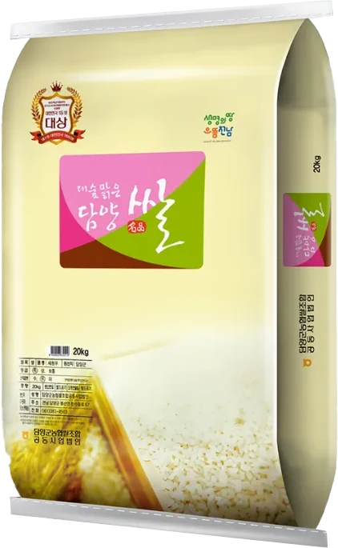
담양군대상대숲맑은담양쌀
- 품종
- 새청무
- 특징
- 농산물우수관리시설
(GAP)에서 보관·도정 언제나 햅쌀 같은 맛
-
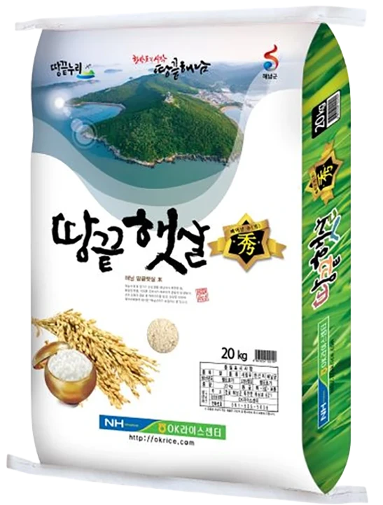
해남군최우수상땅끝햇살
- 품종
- 새청무
- 특징
- 찰진 식감과 밥이 식은 뒤에도 잘 굳지 않고 본래의 맛을 유지하는 점이 특징
-
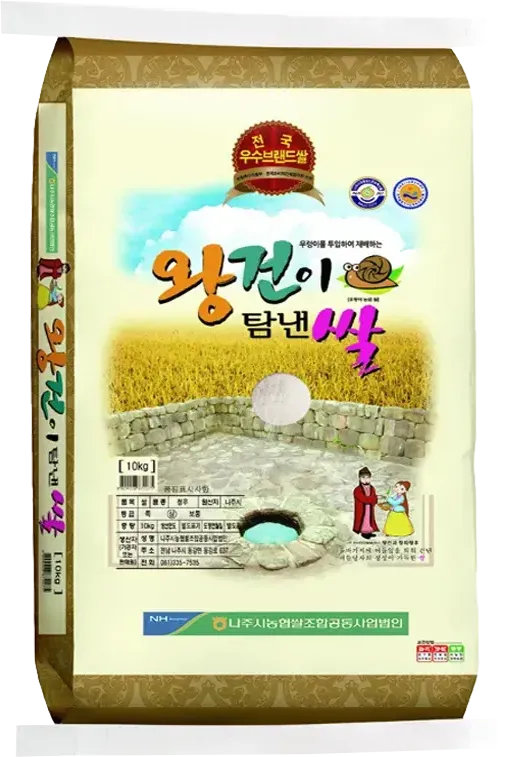
나주시우수상왕건이탐낸쌀
- 품종
- 나주 청무 만생종
- 특징
- 찰기가 좋아 식은 후에도 맛있는 밥맛
-
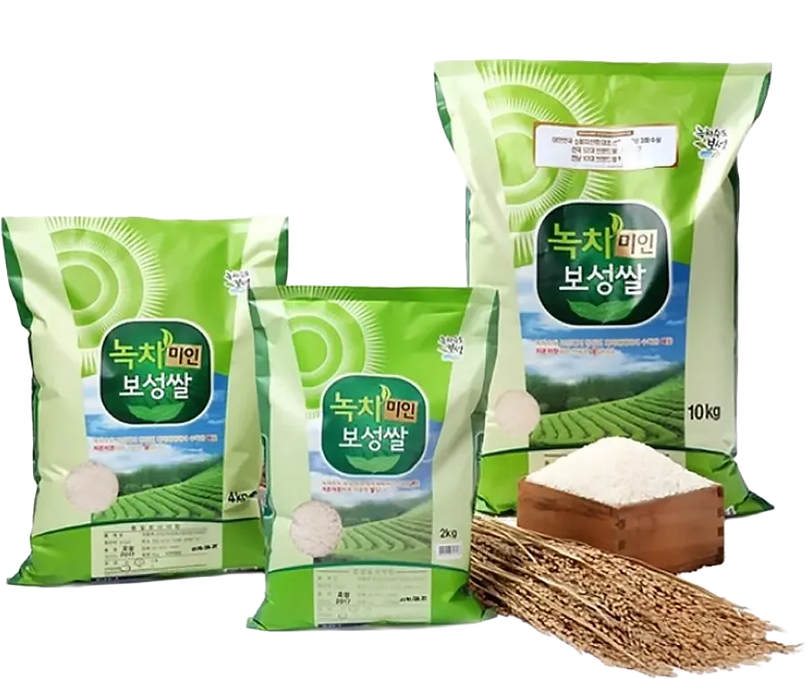
보성군우수상녹차미인보성쌀
- 품종
- 새청무
- 특징
- 윤기와 맛이 좋고 식감이 쫄깃하며 쌀이 투명한 것이 특징
-
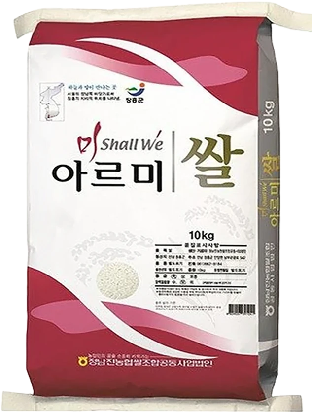
장흥군우수상아르미쌀
- 품종
- 새청무
- 특징
- 밥이 식어도 잘 굳지 않고 본래의 맛을 유지
-
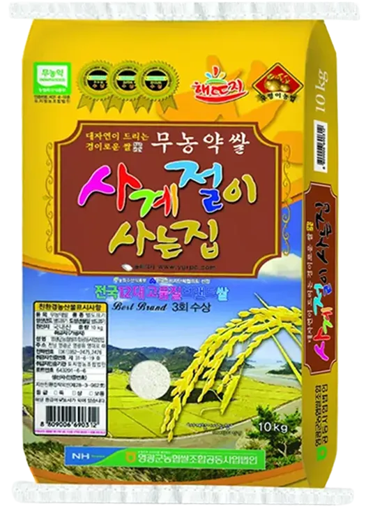
영광군장려상사계절이사는집
- 품종
- 새청무 또는 신동진
- 특징
- 타 품종에 비해 1.3배 쌀알이 크며 단단한 조직감
-
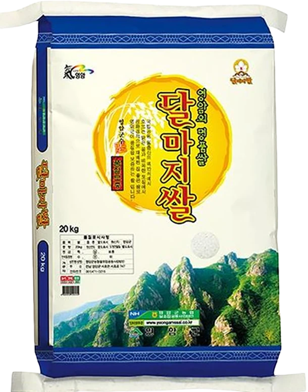
영암군장려상달마지쌀
- 품종
- 새청무
- 특징
- 전량 계약재배로 품종 순도 90% 이상 준수
-
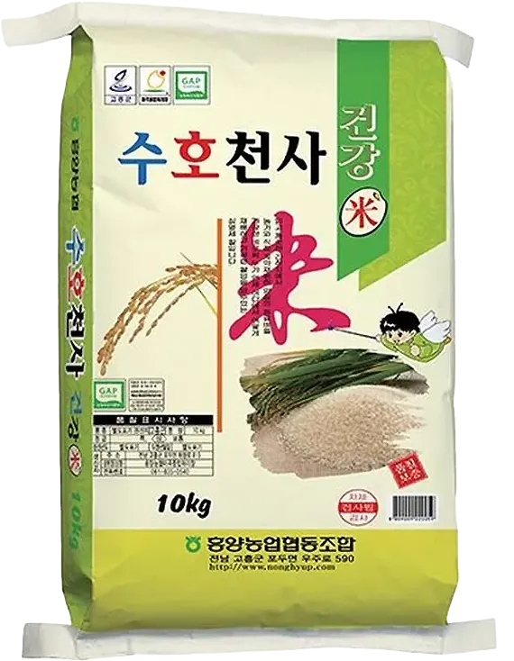
고흥군장려상수호천사건강미
- 품종
- 새청무
- 특징
- 수분을 유지해 식미 향상, 구수한 밥맛이 특징
-
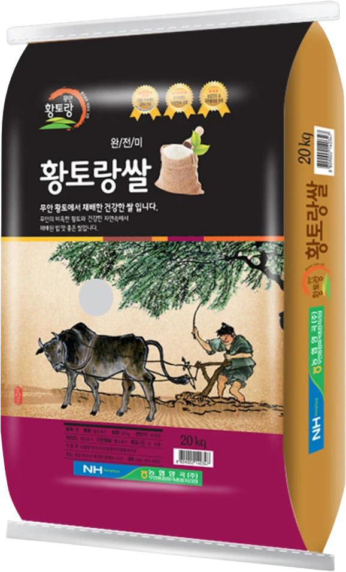
무안군장려상황토랑쌀
- 품종
- 천해진선향
- 특징
- 게르마늄이 풍부한 간척지에서 재배해 미질과 풍미가 뛰어남
-
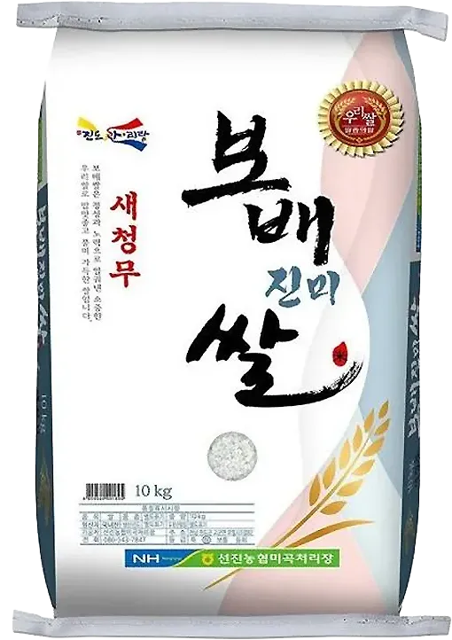
진도군장려상보배진미쌀
- 품종
- 새청무
- 특징
- 쫀득한 식감과 윤기, 구수하고 자연스러운 단맛
※ 남도장터, 각 시군 쇼핑몰에서 구매 가능
(제품명 옆 화살표를 누르면 구매 사이트로 이동해요)
햅쌀이라고 다 같은 햅쌀이
아니랍니다
지역명이나 브랜드보다 먼저 확인할 게 있어요. 맛 좋은 햅쌀 이렇게 고르세요.
-
품종명을 보세요
밥맛이 검증된 단일 품종이 좋아요.
- *단일미란?
- 한 품종이 80% 이상 담긴 쌀을 말해요. 여러 품종을 섞은 혼합미보다 수분·단백질 함량이 일정해 밥맛이 고른 편이에요.
-
생산연도를 확인하세요
올해 생산된 쌀인지 확인하세요. 햅쌀은 그해 새로 난 쌀을 말해요.
-
도정 날짜를 확인하세요
최근일수록 좋아요. 쌀을 도정하면 산화가 시작돼서 도정한 지 오래될수록 수분이 날아가 밥맛이 떨어져요.
-
등급은 높을수록 좋아요
등급은 특, 상, 보통, 등외로 표시돼요. 등급이 높을수록 밥맛이 좋은 편이에요.
햅쌀 밥 지을 때 꿀팁!
햅쌀로 밥을 지을 때는 밥물을 평소보다 10% 줄이는 게 좋아요. 햅쌀은 수분이 많아서 평소처럼 물을 넣으면 밥이 질어질 수 있어요.